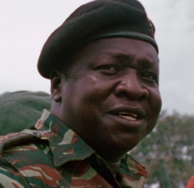
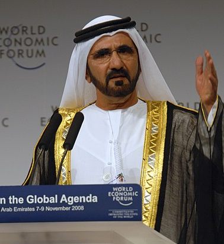
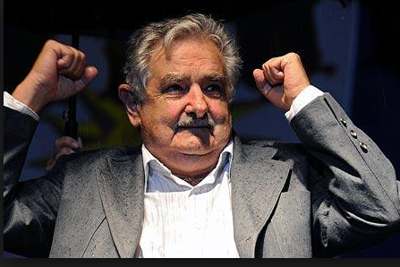
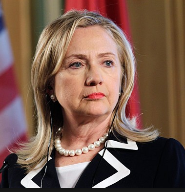
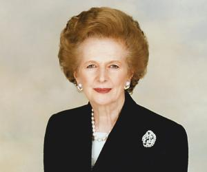
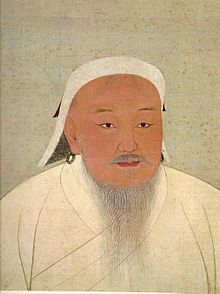
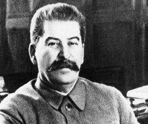
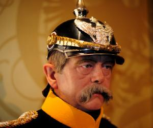
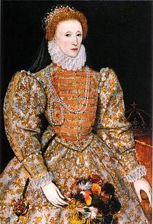
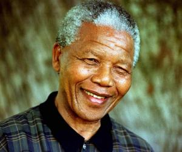

An astute politician. One of the mpst revered and respected American Presidents. He defined Democracy as "the government of the people, by the people and for the people". WHo am he?
Abraham Lincoln
Thomas Jerfferson
Bill Clinton
George Washington

He was famous for the alledged role he played in the Mix-Maz fraudgate which occured in the 1920s.
He held sway in power for Nineteen years before assasinated by his secretary. Who is He?
Idi Amin
Sani Abacha
Jacob Zuma
Joseph Stalin

He was pivotal to the transformation of a desert to a Tourist center; He is a Global leader from a minor region. He also drove the construction of Burj Khalifa, the tallest building in the world.
The Vice President and Prime Minister of his Desert-turned-Tourist Center Country and Who is this Political icon?
General Fidel Castro
Tamim bin Hamad Al Thani
Mohammed Bin Rashid Al Maktoum
Mohamed Abdullahi Mohamed

A modest ruler. He is best described as "THE WORLD HUMBLEST PRESIDENT". Conventionally, he is acclaimed to be
"THE WORLD POOREST PRESIDENT". Who is he?
Dilma Rousseff
Eleuterio Fernández Huidobro
Mauricio Rosencof
José Alberto "Pepe" Mujica

A legal luminary and Advocate for Gender equality, got married to a President; Contested to become the First Female president of the United States but lost graciously. Do you know Her?
Nikki Haley
Hillary Clinton
Elizabeth Warren
Mitchelle Obama

She won three consecutive terms of office in two decades and became the only British Prime Minister in the twentieth century to do so. One of the most influential Prime Ministers of Britain, she was also the most debated stateswomen of the century, earning both respect and hatred from the public. She is usually called "" the IRON LADY". WHo is she?
Tammy Duckworth
Angela Merkel
Margaret Thatcher
Ngozi Okonjo-Iweala

He came to power by uniting many of the nomadic tribes of Northeast Asia. The founder of a mighty Asian Empire, which became the largest contiguous empire in history after his death. Who is He?
Genghis Khan
Tsing Shi Tao
Mahatma Gandhi
Mao Zedong

He single handedly elevated Russia from a backward country to a major world power.A controversial Russian dictator who led Russia to the World war II and subsequently initiated the development of Nucelar bomb making USSR the second country to develop the nuclear bomb. In spite of his ruthlessness, he was a popular and well respected leader. WHats his name?
Joseph Stalin
Vladimir Lenin
Benito Mussolini
Vladimir Putin

A conservative Prussian statesman who dominated German and European affairs from the 1860s until 1890. He engineered a series of wars that unified the German states into a powerful German Empire under Prussian leadership. With that accomplished by 1871 he skillfully used balance of power diplomacy to preserve German hegemony in a Europe. Who is he?
Rudolf Hess
Adolf Hitler
Otto von Bismarck
Joseph Goebbels

Daughter of Henry VIII by second wife, Anne Boleyn. Was the childless Elizabeth was the fifth and last monarch of the Tudor dynasty. Popularly known as the "VIRGIN QUEEN". Who is she?
Cathrine IV of England
Elizabeth II of England
Mary I of England
Elizabeth I of England

A South African anti-apartheid revolutionary, politician and philanthropist who served as President of South Africa from 1994 to 1999. He was South Africa's first black President, and the first elected in a fully representative democratic election. Who is he?
Thambo Mbeki
Rolihlahla Mandela
Winifred Mandela
Jacob Zuma

At the age of 21, he conquered Constantinople and brought an end to the Byzantine Empire.Being a highly regarded conqueror. He is considered a hero in modern-day Turkey and parts of the wider Muslim world. Who is He?
Hammurabi
Suleyman The Magnificent
Mehmed II
Salah al-Din
End Quiz
Do you confirm, you will like to use a lifeline? Your Score drops by 10%
PLEASE READ THESE INSTRUCTIONS CAREFULLY
Welcome!
I know you are eager to earn the your Badge and be an Erudite Scholar. To do that, you need to know:
- There are three levels for you to overcome to earn a section Badge
- Rookie/Learner
- Scholar/Intermediate
- Profesional/Expert
- You will need to reach a minimum level of Scholar in atleast three sections to earn a Scholar Badge
- You will also need to reach a minimum level of Expert in atleast four sections to earn an Erudite Badge and be awarded your certificate
- Remember, you have 20 seconds to answer each question
- Onclicking the wrong Answer for the first time, your lifeline pops out fo use at your disgresion
- At any point you make use of the lifeline, your points drops by 10%
Welcome, once again to this fun quiz and adventure. Lets get you started right away!
- Rookie/Learner
- Scholar/Intermediate
- Profesional/Expert